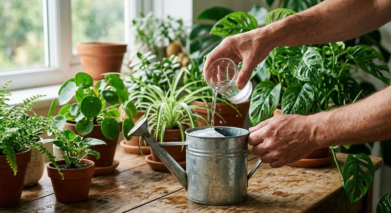

Проблемы растений · 5 мин чтения
Перекорм удобрением: признаки, первая помощь и профилактика
Избыточная концентрация удобрения способна повредить корни и нарушить поглощение воды. Если после подкормки растение стало хуже, не добавляйте другие препараты: сначала проверьте дозу и состояние субстрата.
Материал обновлён 24.10.2026 · Справочная информация, не заменяет инструкцию на упаковке.

Возможные признаки перекорма
Сухие или коричневые края листьев, увядание при влажном грунте, белая корка на поверхности субстрата и угнетённый рост могут говорить о накоплении растворимых солей. Но эти же признаки встречаются при пересушке, плохом дренаже и повреждении корней.
Вспомните, какую дозу и когда вы вносили. Сверьте её с этикеткой, учитывая объём воды. Иногда проблема возникает при повторных подкормках раньше графика или при использовании сразу нескольких средств.
Что предпринять
Прекратите подкормки и проверьте, есть ли в горшке дренажные отверстия. Если инструкция специалиста или надёжный источник советует промывание субстрата, это допустимо лишь при хорошем оттоке воды и здоровых корнях. Не заливайте горшок, который уже заболочен.
При сильном повреждении корней, запахе гнили или ухудшении состояния обратитесь за советом к специалисту по растениям. Иногда требуется осмотреть корни и заменить субстрат, но пересадка также является стрессом и не должна назначаться автоматически.
Как не допустить повторения
Отмеряйте удобрение мерным инструментом и ведите простой журнал подкормок. Не повышайте дозу, если видимый эффект не проявился сразу, и не используйте норму для одного продукта с другим.
В описании Семяздрава приведён расход 250 мл на 250 л раствора. Учитывайте эту пропорцию только при совпадении с актуальной этикеткой и способом внесения; для разных растений и задач могут быть отдельные инструкции.
Пошаговая помощь при подозрении на перекорм
Если симптомы появились вскоре после подкормки увеличенной дозой, первым делом полностью прекратите удобрения. Затем оцените субстрат: при признаках солевого избытка горшок проливают чистой водой комнатной температуры так, чтобы вода свободно выходила из дренажных отверстий, и дают ей полностью стечь; поддон после пролива обязательно опустошают. Процедуру делают аккуратно и не превращают в ежедневное «купание»: постоянно мокрый грунт навредит корням не меньше солей. Сильно повреждённые, полностью сухие листья можно удалить чистым инструментом.
Дальше — режим восстановления: привычный свет без палящего солнца, полив только по просыханию и никаких «антистрессовых» коктейлей поверх. Новые листья нормального цвета — главный признак, что растение справляется. Если вместо улучшения нарастает увядание и запах закисания, проблема может быть уже в корнях: тогда поможет диагностика по статье почему желтеют листья у комнатных растений, а не очередная добавка.
Профилактика: правило одной дозы и журнал
Перекорм почти никогда не случается от одного точного полива по этикетке — обычно это сумма мелочей: «чуть больше концентрата», подкормка по сухому грунту, второе средство в тот же день и отсутствие записи о прошлом разе. Профилактика поэтому организационная. Правило одной дозы: одно средство, одна норма из инструкции, один журнал, где видны даты. Раствор готовьте мерным инструментом по правилам из статьи как развести жидкое удобрение, а не «колпачком на глаз».
Отдельно следите за белым налётом на поверхности грунта и стенках горшка: это видимый след накопления солей из воды и удобрений. При его появлении сделайте очередной полив чистой водой с проливом и пересмотрите частоту подкормок по материалу как часто подкармливать комнатные растения. Помните и про обратную ошибку: бледные листья при чистом грунте и редких подкормках могут говорить уже о нехватке питания — сравнивайте картину целиком.
Если дома несколько средств, храните мерный шприц и журнал рядом с тем флаконом, которым пользуетесь постоянно. Чем меньше импровизации в момент полива, тем реже приходится вспоминать, была ли сегодня уже подкормка или только вода.
Если сомневаетесь между «ещё подкормить» и «подождать», выбирайте подождать и понаблюдать неделю: недокорм исправляется одним обычным поливом, а избыток солей выводится из горшка заметно дольше.
- стоп удобрениям до восстановления роста;
- один аккуратный пролив чистой водой с полным стоком;
- поддон после пролива — опустошить;
- дальше полив только по просыханию;
- журнал дат и доз как защита от повторения.
Частые вопросы
Нужно ли промывать грунт после перекорма?
Это зависит от состояния субстрата и дренажа. При заболачивании дополнительная вода опасна; действуйте осторожно и проверьте корни.
Когда снова можно удобрять растение?
Не возобновляйте подкормку, пока растение не стабилизировалось. Затем следуйте норме на упаковке и не компенсируйте пропущенные внесения.
Нужно ли срочно пересаживать перекормленное растение?
Не всегда. Пересадка — дополнительный стресс для корней, поэтому сначала обычно хватает паузы и пролива. К пересадке прибегают, если субстрат явно испорчен, закис или корни в плохом состоянии.
Как скоро можно снова подкармливать после перекорма?
Только когда растение выпустит здоровые новые листья и вернётся к обычному ритму полива. Начинайте с обычной дозы по этикетке и отметьте дату в журнале.